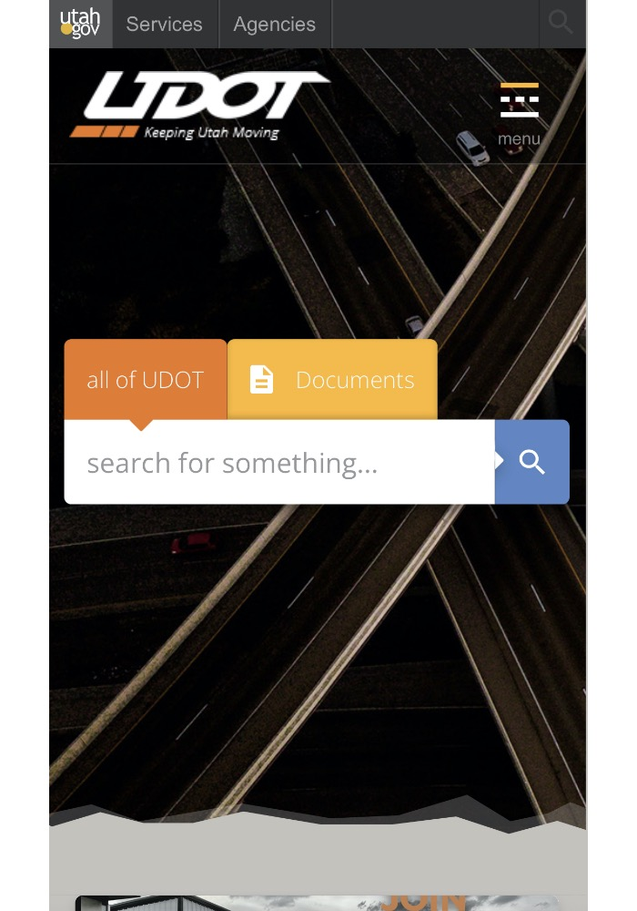

Contrast
UDOT
udot.utah.gov

the UDOT home page has an immediate display of contrast. The background is dark, due to being a set of roads,
but sitting in the front is a white search bar, accompanied by orange, yellow, and blue, all in a bright, almost pastel shade.
This brightness on top of the dark backing is impossible to pass off as not contrast.
Visual Hierarchy
Pokemon
pokemon.com
When you open this page, you are met with a large, purple block with information on it. It almost looks like
it's the only thing there, but it becomes obvious pretty quickly that that's not the case. This is visual hierarchy
at work, where something that is large and has a good amount of contrast to everything else grabs your attention first.
Rule of Thirds
BoxLunch
boxlunch.com

This example of the rule of thirds on BoxLunch's home page lies a short ways down the page, but it is there
nonetheless. Both at the top and bottom of the screenshot, you can see sets of three in a row, causing most to
mentally envision three columns, one for each item. You have the "Shop Safe" icons at the bottom, which all have
nice consistency too, and at the top we see three different covers for airpod cases.